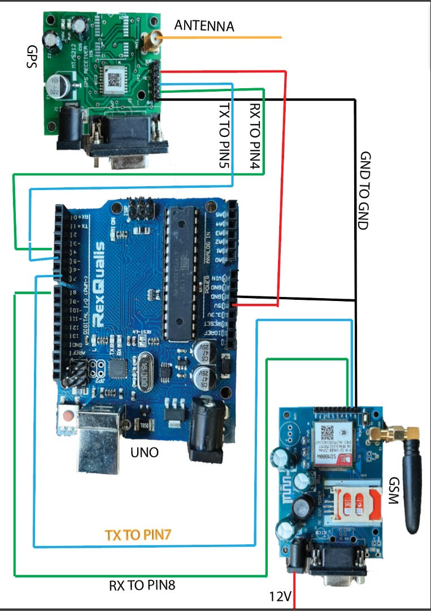
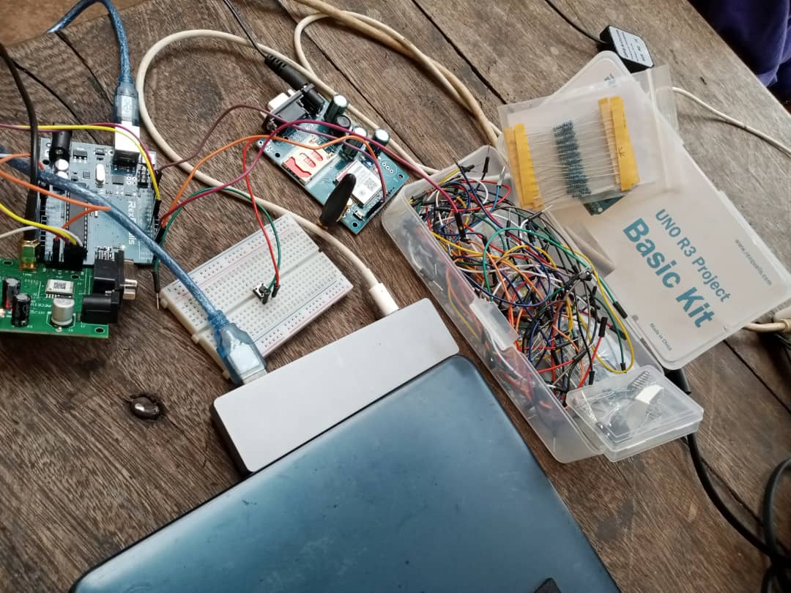
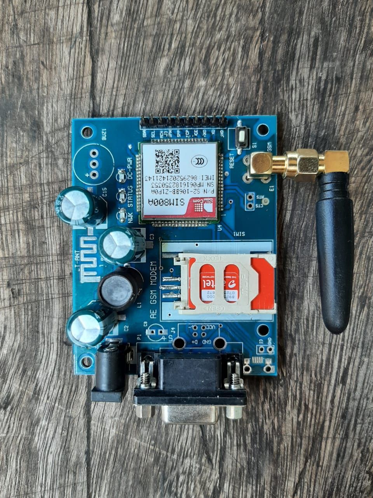

Category: Arduino Project

what does the system do?
basic on the asigned activity, the system tracks the location
of the child, that is to say, when a child gets out of the assigned location by the parent,
an alert message is sent to the parent and the message gives the lattitude and longitunal
values in a link which uses the google maps.
Alert!, Child outside!!!; "tap the image to check"

Arduino_project
Hello everyone,in this artical we will pass you through some few code lines and the link that can get you to
theGitHub project.

1.
Arthor FRANK says
Before going on with the project, one needs to have the following requiements ie;Arduino bord, GSM(sim or radion transmitor), and most relevant the whole setup as a set.
see image below:

2.
After gathering all the required, then start writing your code using any arduino IDE as for us, we usedPROTEUS for our code, you can for the links below for reference
As for us these where also our references.
Remember, accurancy is the key and persistence.
references
1
https://mechatrofice.com/arduino/send-gps-location-via-sms
2
https://circuitdigest.com/microcontroller-projects
/vehicle-tracking-system-using-arduino-gps-and-gsm
Note that the link below was used as a template source to develope our wesite. 3
https://github.com/yenchiah/project-website-template
Arthor Margaret says;
On approving our project proposal ,we had to immediately identify and acquire both the hardware and software requirements.so for our case we are required to develop tracking system in that when a child exceeds the predifined area,a parent recieves an alert containing the cordinates of current location plus the corresponding google map location.
hardware and software requirements
- arduino uno board

- GSM with a 2G sim card

- GPS reciever

- 12 volts to power the GSM and GPS

- GPS external antennal